2018年の総括
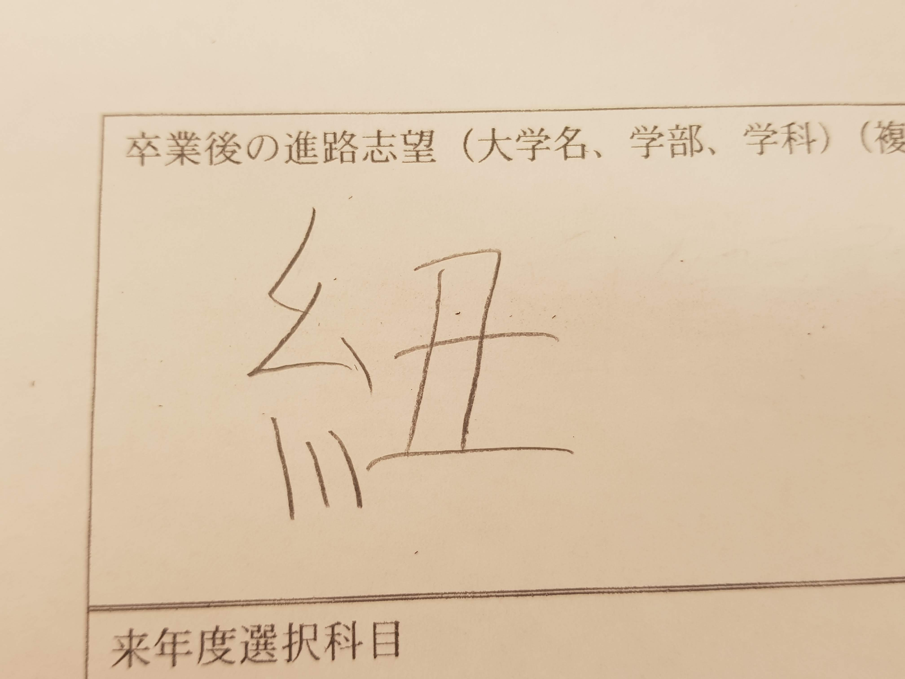年が明けるや風邪を引き、寝正月から始まった2018年ですが、何やら色々なことがあった気がします。
ちょっと振り返ってみましょうかね。
お絵かきをはじめた
お年玉の収入でペンタブを新調し、クリスタを買いました。なんで買おうと思ったかは分かりませんが、買いました。
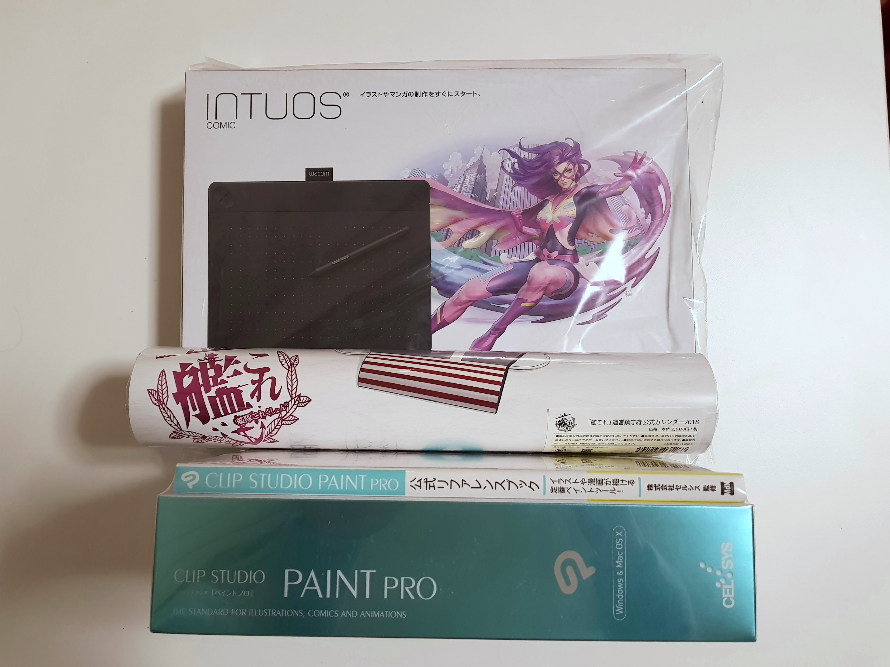
絵を描くのは昔から好きでしたが、上手ではありませんでした。でもね、なんかデジタルで描いてみたかったんですよね。おにゃのことか。
成果物は後で晒します。えへへ。
久しぶりにリアタイでアニメを観た
オタクを自称している私ですが、信じ難いことに2016年秋クールを最後にリアタイで切らずにみたアニメが無いんですね。
新年から""あの""「カードキャプターさくら」の続編が放映されるということで、年が明ける前から楽しみにしていました。
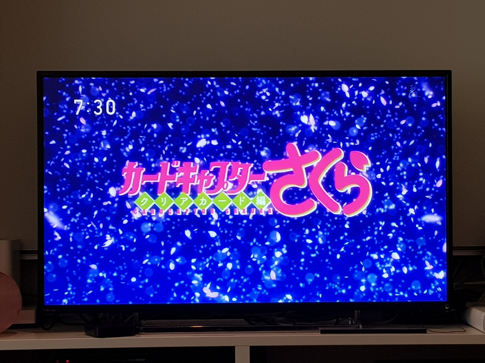
2018年の上半期は、日曜日は7：30までに飛び起きてCCさくらを観る生活を送っていました。録画もしてたけど、リアタイでみたいよね。やっぱり。CCさくら展も前期と後期行きました。
今年ちゃんと観たアニメ、女児アニメだけじゃないですよ。ちゃんと深夜アニメも観ましたって。今年のアニメで推せるのはやはり、
宇宙よりも遠い場所
ですよね。
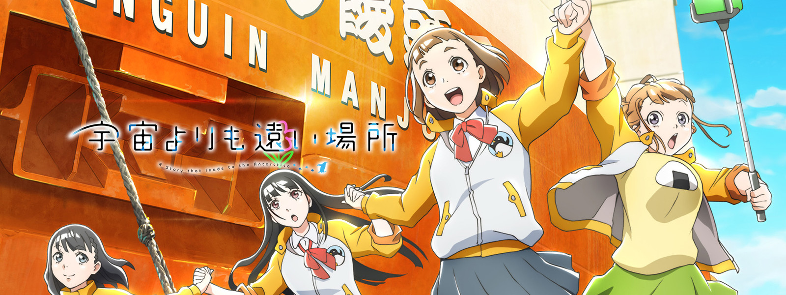
海上自衛隊が協力しているということで興味を持ったのが始まりでしたが、キャストから登場人物の人間らしさや背景の綺麗さ、話の展開、どの点においても文句のつけどころがない作品でした。
特に12話は非常に感動しました。"あの"シーンの表現方法も斬新でとてもよろしかった。
よりもい以外にも、「ひそねとまそたん」とか、推したいアニメはありますが置いといてですね･･･
今年出会ったアニメ作品でどうしても外せないのは
映画「リズと青い鳥」
です。
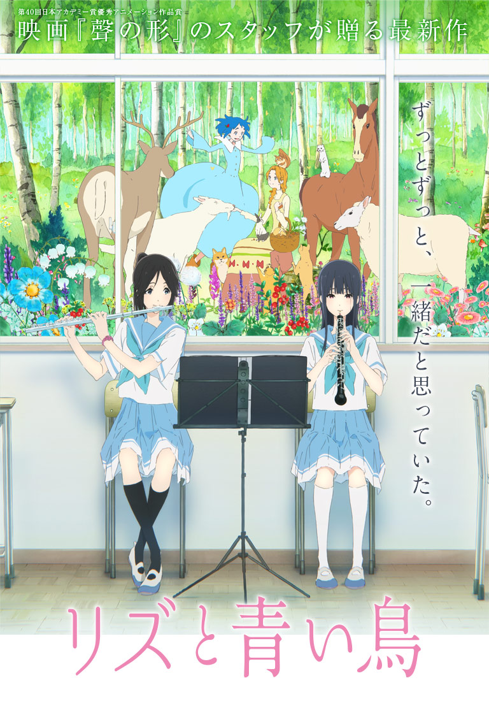私、元吹奏楽部員なこともあって「響け！ユーフォニアム」本編はあんま好きじゃないんですよ。特に二期。
でもね、リズは本当によかった。山田尚子監督は信用できる。
繊細なキャラクターデザインと背景、登場人物の細かな動作から読み取れる心情の推移、足音などの音響から作り出される世界観…
「神は細部に宿る」とは言いますが本当にそのとおりで、丁寧で繊細な描写がセリフでは表せない側面まで伝えてくれた。ダメだ。私の貧弱な語彙じゃ語れねえ。
BD買いました。崇拝します。
まあ感想やネタバレが読みたい人は専門のサイトさんへ行ってください。
Summer Pockets
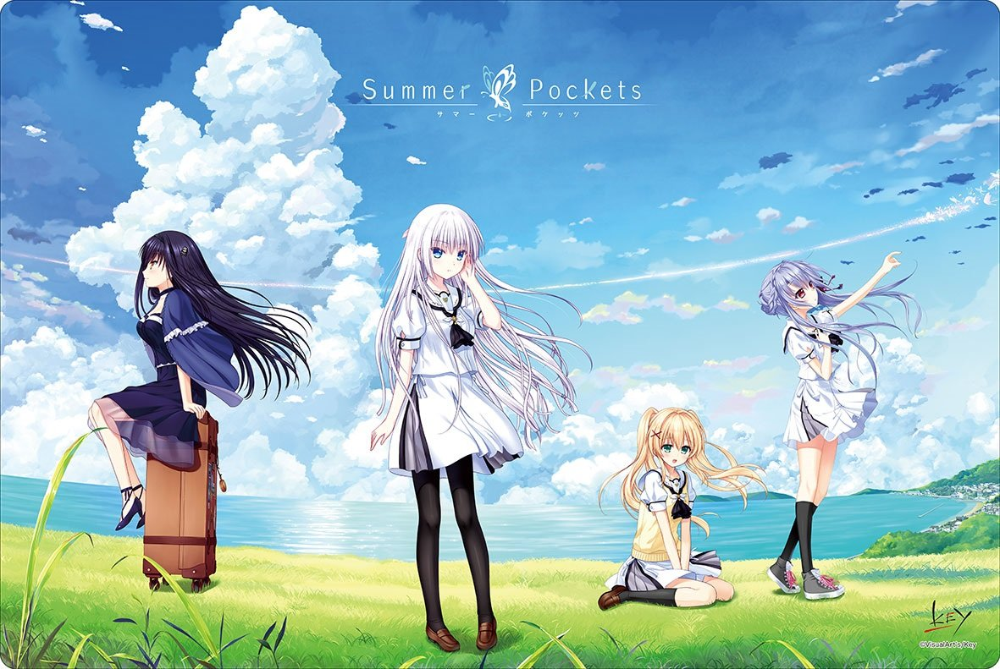今年一番の出会いはこれです。
私は鍵っ子なので迷わず予約注文しましたが、本当に良かった。KEYは終わっていなかった。
「夏」をテーマにした作品は、かの有名な「AIR」と被るのでは？と思っていたけれども、この作品の主題は「夏」というより「夏休み」ですね。
ボリューム不足は否めませんでしたが、グランドルートではしっかり泣きました。
個人的には鴎ルートのお話が好きだったね。スマホ版とSwitch版が出た/出るので皆買おう。
今年出会ったものについてはこれぐらいにしとくか。
普段の生活
私は無職学生なので、学校に行き、授業を受け、家に帰るのが基本の生活になります。
それに加えて総務委員会（いわゆる生徒会）で仕事をしたり、プログラミングかじったり、フルート吹いたり、写真撮ったり、落書きしたりして生きてます。
試験前日にライブ行くなど、学生としては少々雑に生きていた1年でした。
お買い物
ツイッターって購入報告は伸びるよね。作品をFavってくれ。
てなわけで今年の大きめなお買い物を晒すか。
まず前述のペンダブとクリスタ、あとSummer Pockets。そしてデカいのが･･･
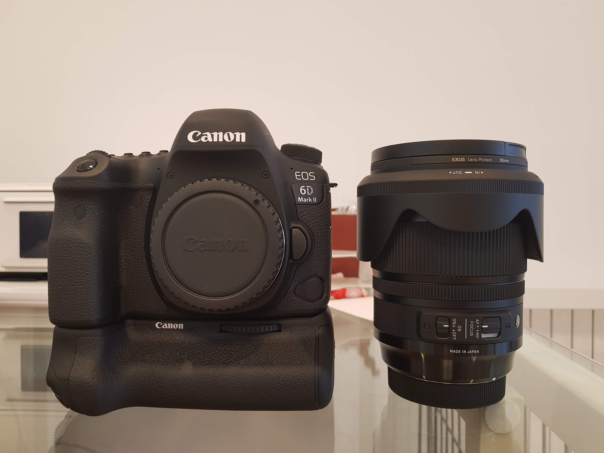
Canon EOS 6D Mark Ⅱ + SIGMA Art 24-105mm F4 DG OS HSM
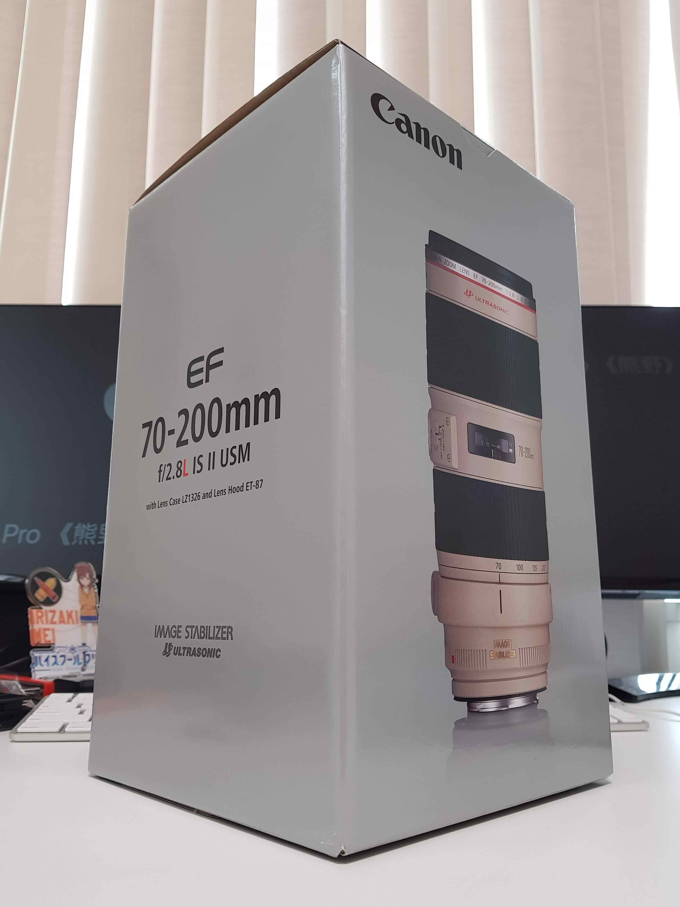
Canon EF70-200mm F2.8L IS II USM
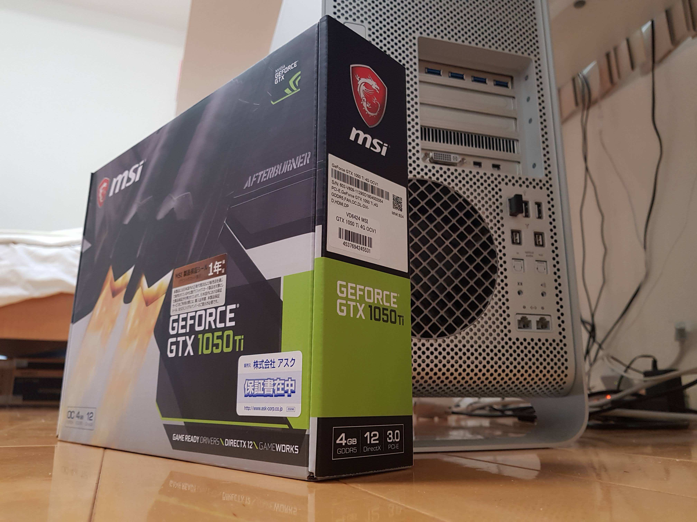
MSI GeForce GTX 1050 Ti
こんなところかしら。あとリズのBD買ったか。CDも結構増やした気がする。というか飽和した。
人生で最も買い物した年だったかもしれない。お金がなくなった。えへへ。
行ったところ
顔を出したイベントとしては、OSC2018 Tokyoと冬コミ一般参加かしら。
あとは旅行で関西から関東にかけてあちこち行ったわね。横須賀にも足繁く通った気がする。お写真たくさん撮った。
だいぶ文面が投げやりになってきた気がする。これだから飽き性は。
やったこと/成果
???「バカみたいに金つっこんでるけど何かやったんか？」
うう･･･
あ、Androidアプリとか･･･つ、作りました。
今年作ったクソアプリ群
・夕立じゃんけん･･･友達を煽るために作ったクソアプリ
・タップナンバー･･･簡易的なクソゲー
・熊野クイズ･･･お嫁について知ってもらうために開発、（開発中）（未公開）
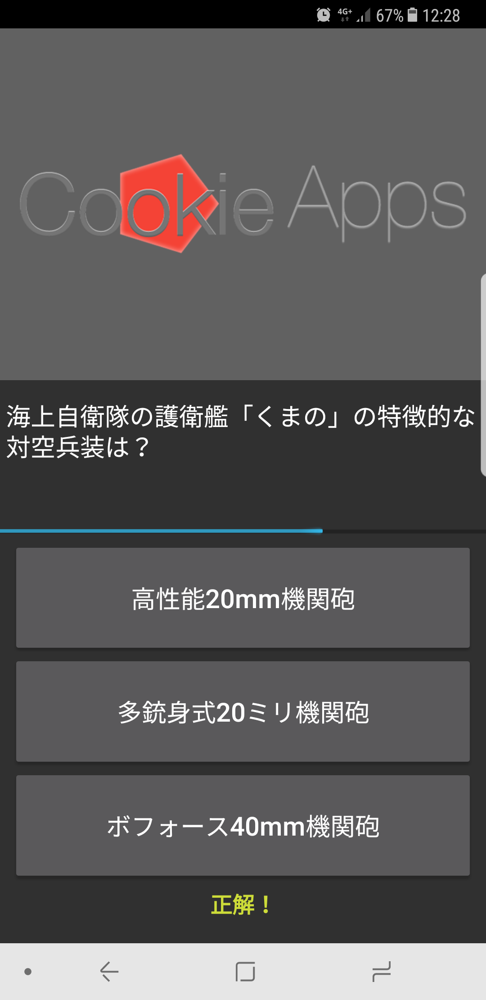
・遅刻カウンタ･･･自分の出席状況を管理するアプリ、クソ便利。
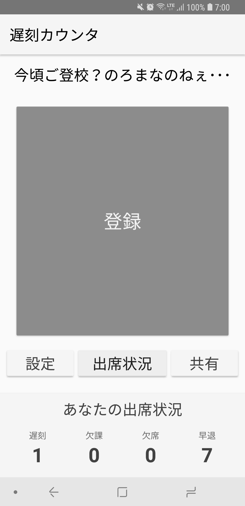
・嫁時報アプリ･･･毎時間、ランダムでお嫁が時報を投げてくれる。艦これ開かなくてもいい。かわいい。開発中。
・嫁が選択授業を決めてくれるアプリ･･･来年度の選択志望届の提出日前日、錯乱して作ったクソアプリ。バグ多し。
見事にゴミを量産していた･･･。あとこのHPのリニューアルとかしたね。Webアプリ作ってみたいとか言ってたら大晦日。
あ！先生、成果あります！！！艦これなら！！！
嫁空母打撃群の完成
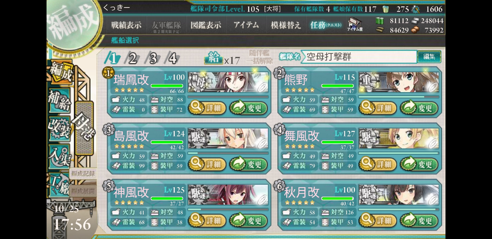
は？
いや、説明します。艦これを始めた当初に心に決めた6隻と、その艦の「喪失日時」に結婚する計画をついに完遂したんですよ。
これで「航空母艦瑞鳳を基幹とする空母打撃群」が完成したわけですね。めでたいめでたい。
学祭のお仕事
世のためにも働きましたよ、ちゃんと。学校の文化祭で、入ってもいない生物部の手伝いしました。
生物部では魚の透明標本を展示する予定だったのですが、「この模造紙群、ほとんどの人が読まないのでは」と思ったので、嫌でも来場者が模造紙に書き連ねた透明標本の説明を読まなければいけない、地獄のような仕組みを用意しました。
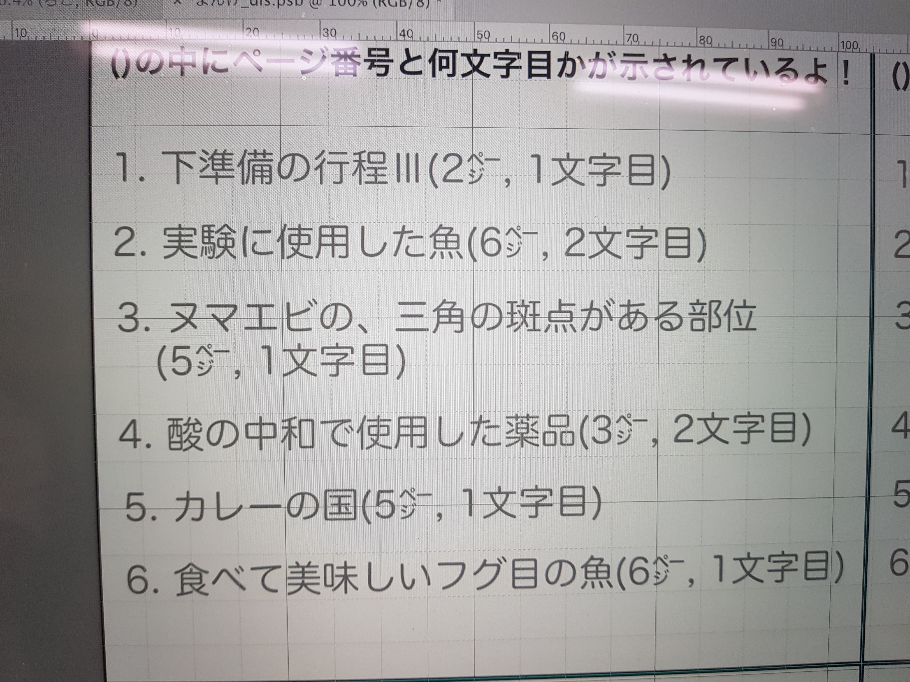
ワードパズルを作って正解者には景品を用意、という程度のものでしたが客層に対しては十分な内容だったらしく、想定以上にウケたのでやり甲斐があったわね。
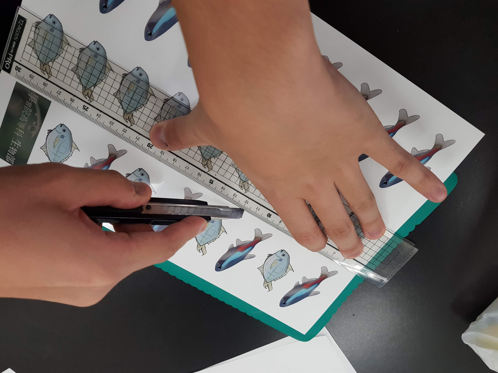
ちなみに景品はシール（自作）でした。魚の絵も片方描いた。小学生は素直で可愛いね。
マジで書くことが無くなってきた。いや、いっぱいあるんですけど内輪ネタばっかや。
お え か き
もうこれでいいか。
デジタル･･･というかキャラ絵を始めたのは今年の3月ぐらいから。
ここで一年の成長をみてみましょうか。
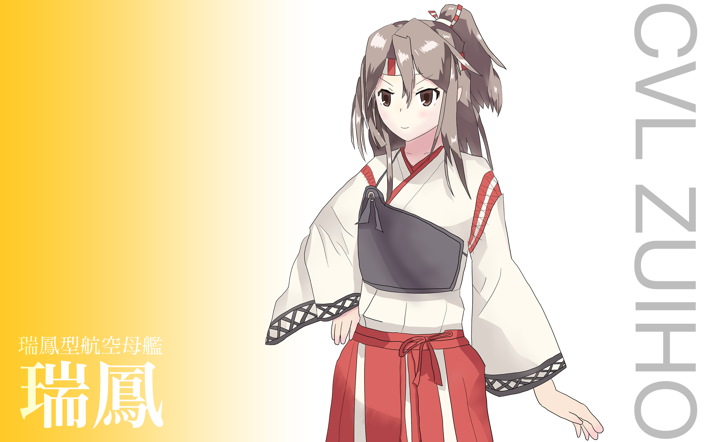
これが最初（3月）に描いた絵です。艦これの「瑞鳳」。（クリックするとPixivに飛ぶよ）
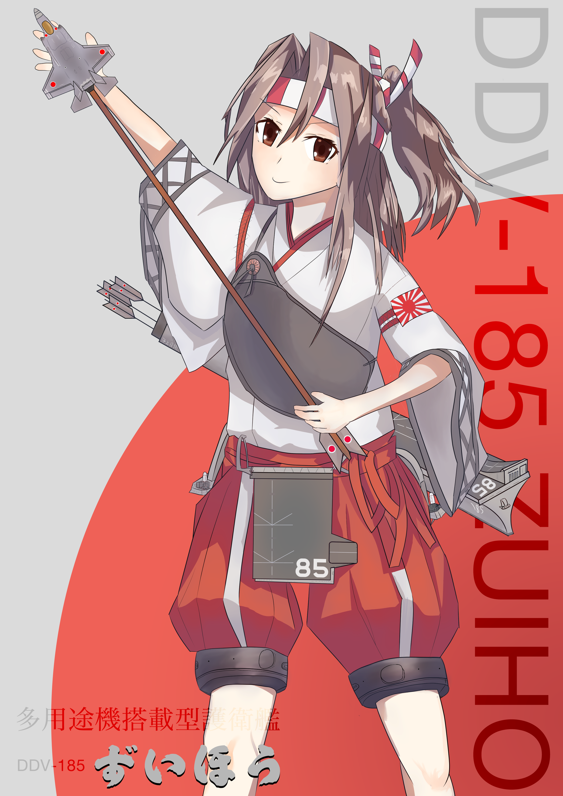
これが9月に描いた瑞鳳。まあ半年で描いたにしては上達したんじゃないんですか。
9月からは3回ほど艦これのわんどろにも参加しました。今は練習すれば伸びる時期なので（経験則）楽しいです。
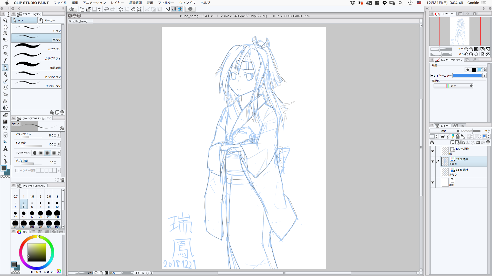
調子に乗って元旦に間に合わせようと晴れ着瑞鳳を描き始めましたが、間に合わない。ゲーム内実装期間中に完成すればいいね。
まとめ
・たくさんお買い物した。
・色々とやってみた。
・色々と上達した。
・色々と中途半端になった。
・形になる成果物は少なかった。
こうして振り返ってみると、色々と濃い一年だった。あっという間だった。
旅行に行った話とか、海自や米軍基地に行った話、総務委員長選挙に立候補した話とかもしたいけど、またの機会に。
来年は高校3年生。権利が増えて、義務が重くなる頃合いですね。いつまでも遊んでいられないかも。
目標立てとくか。
来年の目標
・ちゃんと進学する。
・フルートの練習をする。
・ゲームを一本作って、完成させる。
・高校生活、後悔しないように生きる。
こんなところでしょうか。「高校生のうちに即売会にサークル参加してみたい」とか思ったりもしますが、あれこれ手を出すと死ぬので様子を見て、ですね。
遠くを見すぎて躓かないように、程々に頑張っていきたいです。